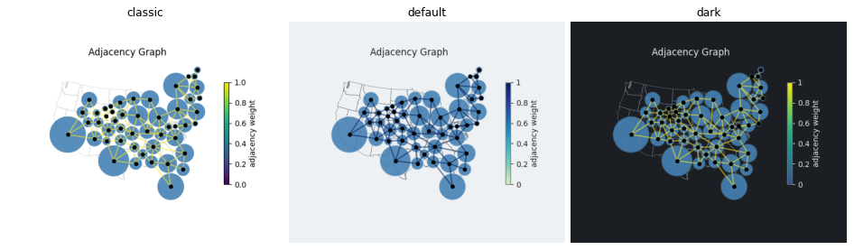
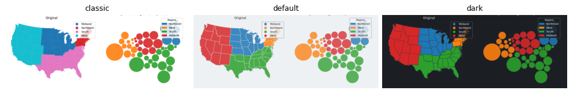
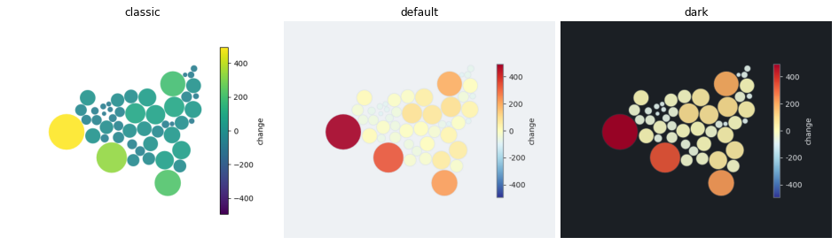
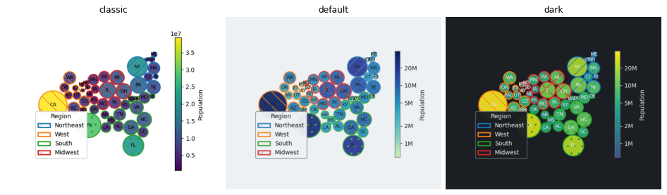
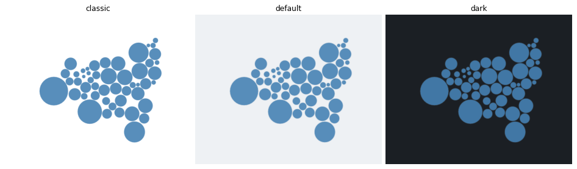
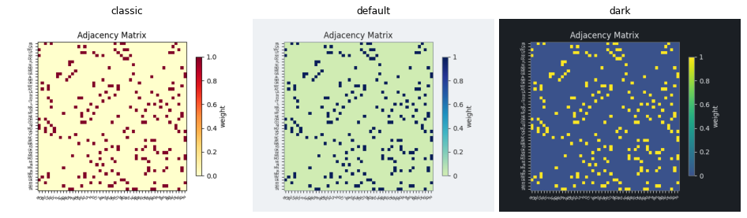
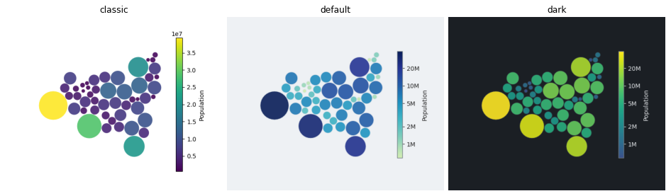
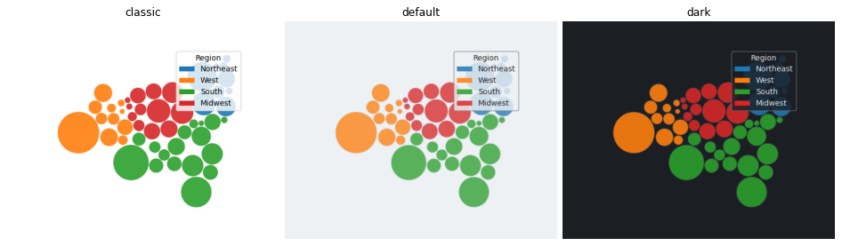
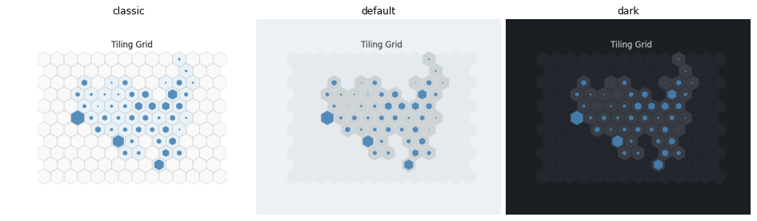

Part B2 of the style system. SymbolCartogram.plot and the symbol plot functions take style=, with the surface, the palettes by data role, the channels (fill, alpha, edge, linewidth, label), hatch cycle, reference layer and colorbar of the style. plot_symbols takes center= and categorical=. The default look of these plots changes; style="classic" gives the earlier look.
make_figures.py draws each plot in classic, default and dark on the PR branch. classic is the look before this PR: the fill, edge and line colors, line widths, label texts, colorbar labels, legends and adjacency segments of plot_symbols, plot_comparison, plot_adjacency, plot_adjacency_heatmap, plot_tiling and plot_displacement are identical to main in the compared cases.
| style fields | hatch_cycle; channel_range() for the output range of data-driven alpha, line width and label size |
plot_symbols | style=, center=, categorical=; defaults of cmap, alpha, edgecolor, linewidth, label color and size come from the style |
| other functions | style= on plot_comparison, plot_adjacency, plot_adjacency_heatmap, plot_tiling (also the method) and plot_displacement; link_cmap and the heatmap cmap default to the sequential palette |
| fix | legend_kwargs["label"] sets the colorbar label (it was ignored) |
| not yet | the fixed colors of the displacement arrows, adjacency nodes and tile pool edges |
Suite 1244 passed, ruff and mypy clean; the symbol gallery examples and the edited notebooks run without error.

plot_adjacency: link colormap from the sequential palette, colorbar of the style, outline underlay in the axes edge color.

plot_comparison: the original panel takes the palette and the surface of the style.

center=0: the diverging palette, symmetric around the center.

Fill by value, edge and hatch by category, labels: the edge palette follows the categorical palette of the style, the label color the text color.

No data: the fill of the style (steelblue in classic, default and dark).

plot_adjacency_heatmap: sequential palette and colorbar of the style.

Population: classic (viridis, linear, scientific notation), default (truncated YlGnBu, log colorbar with ticks 1M to 20M) and dark (viridis).

A text column: the categorical palette of the style.

plot_tiling: tiles use the reference layer; occupied tiles are the reference fill moved toward the text color.